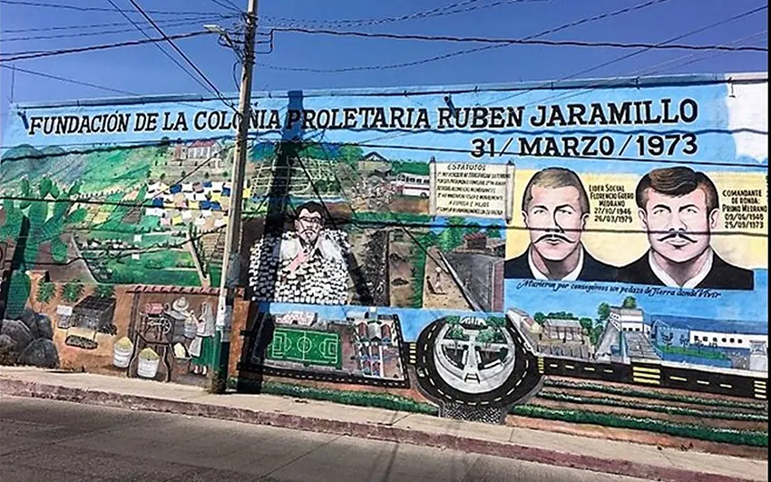

Tu delegación en Rubén Jaramillo, cerca de ti
Atención ciudadana, gestión de servicios públicos y programas comunitarios para las familias de la colonia Rubén Jaramillo y comunidades vecinas, en Temixco, Morelos.

Resolvemos tus dudas sobre trámites y servicios.
Servicios de la delegación
Somos el enlace directo entre la comunidad y el Ayuntamiento. Acércate con tu solicitud y te orientamos.
- Atención ciudadana
- Gestión de servicios públicos
- Recepción de solicitudes
- Enlace con el Ayuntamiento de Temixco
- Programas comunitarios
- Programa de despensa básica a bajo costo
Trabajamos para fortalecer la participación ciudadana y mejorar continuamente los servicios que recibe nuestra comunidad.
- 1973
- Año de fundación de la colonia
- 8
- Barrios en la demarcación
- ≈85 ha
- Extensión urbana actual
- ≈7,000
- Personas en la toma fundacional
Celebramos nuestras raíces cada 31 de marzo
Cada año la comunidad conmemora la fundación de la Colonia Rubén Jaramillo con un gran desfile, comida, música y convivencia. Es el día para recordar nuestra lucha y unirnos como familia. ¡Forma parte viva de nuestra historia!


Conoce la colonia
Historia, territorio y servicios al alcance de todos los vecinos.
Nuestra historia e identidad
De la toma del terreno en 1973 a la organización comunitaria que hoy nos distingue.
Leer la historiaTerritorio y barrios
Ocho barrios, límites, colindancias y la avenida Salvador Allende como eje.
Ver el territorioLugares y servicios
Escuelas, centros de salud, mercados y espacios públicos con dirección y horarios.
Buscar un lugarPreguntas frecuentes
¿Dónde está la Delegación Rubén Jaramillo?
Estamos en Mariano Matamoros esquina con Niño Artillero S/N, colonia Rubén Jaramillo, C.P. 62587, Temixco, Morelos.
¿Cuál es el teléfono de la delegación?
Puedes llamarnos al (777) 362-1830.
¿Qué servicios ofrece la delegación?
Atención ciudadana, gestión de servicios públicos, recepción de solicitudes, enlace con el Ayuntamiento, programas comunitarios y un programa de despensa básica a bajo costo.
¿Cuántos barrios tiene la colonia Rubén Jaramillo?
La delegación cuenta oficialmente con ocho barrios y una extensión urbana aproximada de 85 hectáreas.
¿Cuándo se fundó la colonia?
La Colonia Proletaria Rubén Jaramillo se fundó el 31 de marzo de 1973 y cada año se conmemora con un desfile y convivencia comunitaria.
Juntos construimos una mejor comunidad
¿Necesitas hacer una gestión o resolver una duda? Llámanos o visítanos en la delegación: te atendemos con gusto.